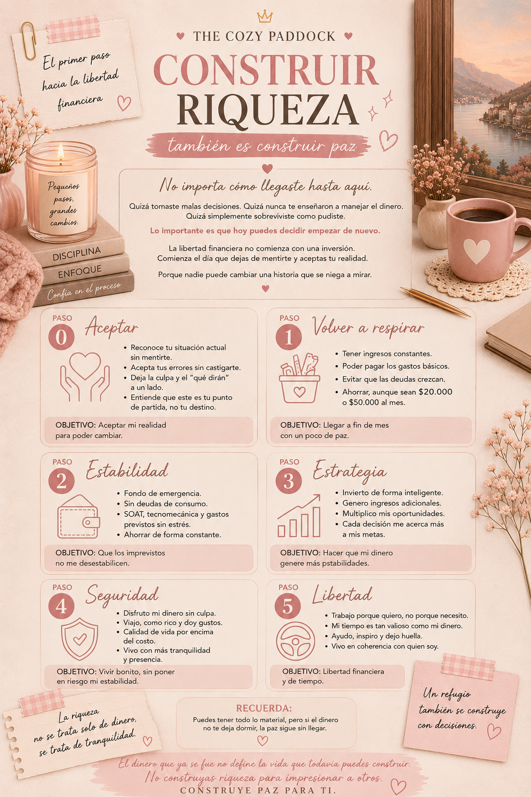

Construir riqueza también es construir paz
Durante mucho tiempo dudé si debía escribir sobre dinero en esta sección.
Después de todo, Cozy Life habla de calma, de bienestar y de construir una vida bonita. Me preguntaba si este tema realmente tenía cabida aquí.
Hasta que entendí algo.
No existe una vida acogedora cuando cada fin de mes llega acompañado de ansiedad.
Puedes tener velas, luces cálidas, una taza de café y una habitación hermosa. Pero si cada noche te preguntas cómo vas a pagar la tarjeta de crédito, la tranquilidad desaparece.
Y entonces comprendí que hablar de dinero también es hablar de bienestar.
La libertad financiera no empieza donde creemos
Hoy en día es muy común encontrar videos o publicaciones que explican cómo alcanzar la libertad financiera. Casi siempre muestran un camino aparentemente sencillo: compra activos, invierte, genera ingresos pasivos y listo.
Pero luego cerramos el celular y volvemos a nuestra realidad.
Tarjetas de crédito.
Préstamos.
Cuotas.
Intereses.
Y una pregunta que muchas personas nos hacemos en silencio:
¿Cómo llegué hasta aquí?
Yo escribo desde mi propia experiencia y debo confesar que pertenezco a ese grupo de personas que un día miró sus extractos bancarios y simplemente no entendía cómo debía tanto dinero.
Y quiero hacer una aclaración importante.
No hablo de quienes adquirieron una deuda para comprar una vivienda, un automóvil o financiar sus estudios. Esas suelen ser decisiones conscientes, tomadas con un propósito claro.
Yo hablo de otro tipo de deudas.
Las que aparecen poco a poco.
Las compras impulsivas.
Las tarjetas de crédito.
Los préstamos de libre inversión.
Ese "sí" que damos porque creemos que podremos pagarlo después.
Y, cuando menos lo esperamos, ya no sabemos cómo salir.
Cuando el dinero también roba la calma
Puedes tener una habitación bonita.
Luces cálidas.
Velas.
Música de fondo.
Una taza de café.
Todo puede verse muy cozy.
Pero si el dinero no te deja dormir, la paz sigue sin llegar.
Fue entonces cuando comprendí que todas esas infografías sobre libertad financiera tenían un problema.
Empezaban demasiado tarde.
La mayoría habla de cuatro etapas: estabilidad financiera, estrategia, seguridad y libertad.
Pero yo no estaba en ninguna de ellas.
Así que decidí agregar unos pasos más.
Paso 0: Aceptar
Creo que cualquier cambio importante comienza exactamente igual.
Aceptando.
Aceptar significa reconocer nuestra situación financiera sin excusas y sin castigarnos.
Saber cuánto ganamos.
Cuánto debemos.
Cuánto estamos pagando en intereses.
Y cuánto nos cuesta realmente vivir.
Aceptar también implica entender algo que puede doler mucho:El dinero ya se fue.
No podemos cambiar las decisiones que tomamos hace cinco años.
No sirve de nada seguir culpándonos.
Lo único que podemos cambiar es lo que haremos con el próximo peso que llegue a nuestras manos.
Ese es nuestro verdadero punto de partida.
Paso 1: Volver a respirar
Aquí el objetivo no es hacerse rico.
Es recuperar un poco de tranquilidad.
Necesitamos ingresos constantes que permitan cubrir nuestros gastos básicos y evitar que las deudas sigan creciendo.
También creo que, por pequeño que sea, debemos comenzar un ahorro.
Aunque sean veinte mil pesos al mes, no es la cantidad lo que import, es el hábito.
El objetivo de esta etapa es muy sencillo: Llegar a fin de mes respirando un poco más tranquilos.
Paso 2: Estabilidad
Solo cuando logramos controlar nuestras finanzas podemos empezar a construir una base sólida.
Aquí aparece el fondo de emergencias.
Los ahorros para gastos programados como el SOAT, la tecnomecánica del carro o los impuestos.
Y, por primera vez, nuestros ingresos empiezan a ser mayores que nuestros gastos.
Ese momento en el que, después de pagar todo, todavía queda algo de dinero.
El objetivo de esta etapa es que un imprevisto deje de convertirse en una crisis.
Paso 3: Estrategia
Ahora sí, es momento de hacer que el dinero trabaje para nosotros.
No se trata de comprar un bolso nuevo creyendo que fue una inversión.
Se trata de utilizar nuestros ahorros para construir activos que puedan generar nuevos ingresos.
El objetivo ya no es ahorrar más.
Es crear oportunidades.
Paso 4: Seguridad
Esta es una etapa que me gusta mucho porque nos recuerda que el dinero también está para disfrutarse.
Viajar.
Salir a comer.
Comprar algo que realmente queremos.
Pero hacerlo desde la tranquilidad, no desde la deuda, no desde la tarjeta de crédito, no desde la ansiedad.
El objetivo es vivir bonito sin poner en riesgo la estabilidad que tanto nos costó construir.
Paso 5: Libertad
La libertad financiera llega cuando trabajar deja de ser una obligación para sobrevivir y se convierte en una elección.
Cuando nuestro tiempo vuelve a pertenecernos.
Porque el tiempo también es riqueza.
Y quizá sea la más valiosa de todas.
Mi realidad hoy
Confieso que escribir todo esto también ha sido un ejercicio de honestidad conmigo misma.
Hoy todavía estoy en el Paso 1 y no sé cuánto tiempo permaneceré aquí, sé que mis gastos todavía superan mis ingresos y que debo cambiar muchos hábitos.
Hace apenas unas horas me ocurrió algo muy sencillo.
Se dañó el cable del cargador de mi celular.
Mi primera reacción fue exactamente la de siempre:
"Tengo que comprar otro."
Incluso pensé en sacar nuevamente la tarjeta.
Pero mientras caminaba hacia la tienda apareció otra idea.
"Ya tienes otro cable."
Era el cable corto que uso para la batería portátil.
Funcionaba perfectamente.
No necesitaba comprar nada, solo necesitaba recordar que ya tenía una solución.
Y entendí que muchas veces mis compras no nacen de una necesidad, nacen del impulso.
Por eso sé que este camino no será fácil, no depende únicamente de ganar más dinero, bambién depende de aprender a decir que no.
Un refugio también se construye con decisiones
Todavía estoy lejos de la libertad financiera y pasarán años antes de llegar al último escalón.
Pero hoy sé algo que hace unos meses no sabía.
Construir riqueza no empieza cuando invertimos.
Empieza cuando dejamos de huir de nuestros números.
Cuando aceptamos nuestra realidad.
Cuando aprendemos a decir que no.
Cuando entendemos que una compra impulsiva puede alejarnos un poco más de la vida que realmente deseamos.
Porque, para mí, una vida cozy no consiste únicamente en tener una taza de café bonita o una habitación bien decorada.
Consiste en poder sentarme a disfrutar de ese café sin que el dinero me robe la tranquilidad.
Y ese refugio… también se construye.
About The Cozy Paddock
The Cozy Paddock es un espacio donde la Fórmula 1 se vive desde una perspectiva más suave y femenina.
Creado para chicas que quieren entender, disfrutar y experimentar el deporte de una forma simple, acogedora y bonita.
The Cozy Paddock is a space where Formula 1 meets a softer, more feminine perspective.
Created for girls who want to understand, enjoy, and experience the sport in a simple, cozy, and beautiful way.
Autoras

Mery Ramirez

Sheyla Franco

Mayra Torreblanca